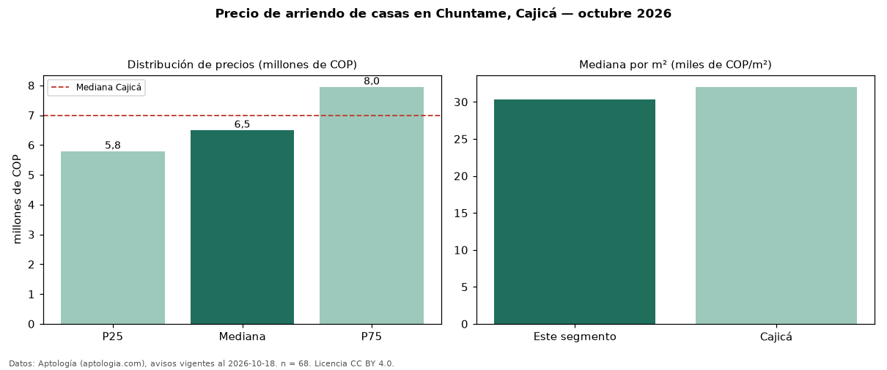

Precio de arriendo de casas en Chuntame, Cajicá — octubre 2026
En Chuntame, Cajicá, la mediana de canon mensual de casas es COP 6,50 millones, según 68 avisos vigentes. Frente a la mediana de Cajicá para casas (COP 7,00 millones), queda 7 % por debajo. Por metro cuadrado, la mediana es COP 30.337/m² al mes (n = 68 avisos con área), 5 % por debajo de Cajicá (COP 32.035/m²). Con el precio por m² de venta del mismo segmento (COP 6,16 millones/m²), la rentabilidad bruta implícita es 5,9 % anual (aproximación con medianas de ofertas distintas). El área mediana anunciada es 223 m². El segmento con más oferta es el de 3 o más habitaciones (67 avisos, mediana COP 6,50 millones). La administración mediana declarada es COP 1,09 millones al mes (n = 28), aparte del canon. El estrato más frecuente es 5 (44 % de los avisos con estrato). Datos: Aptología (aptologia.com), CC BY 4.0 — https://www.aptologia.com/arriendo/cajica. Archivos: PDF, CSV con las cifras y gráfica PNG.

| Avisos únicos | 68 |
|---|---|
| Percentil 25 | COP 5.795.000 |
| Mediana | COP 6.500.000 |
| Percentil 75 | COP 7.950.000 |
| Mediana por m² | COP 30.336 |
Fuente: avisos vigentes de portales inmobiliarios recopilados por Aptología, deduplicados (mínimo 30 avisos únicos por celda). Precios pedidos, no cerrados. Fecha: 2026-10-18.